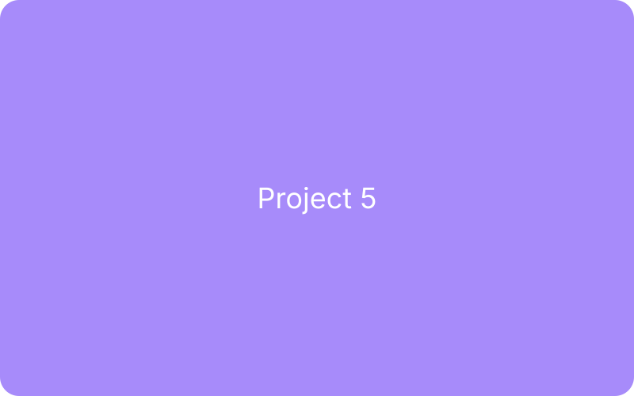
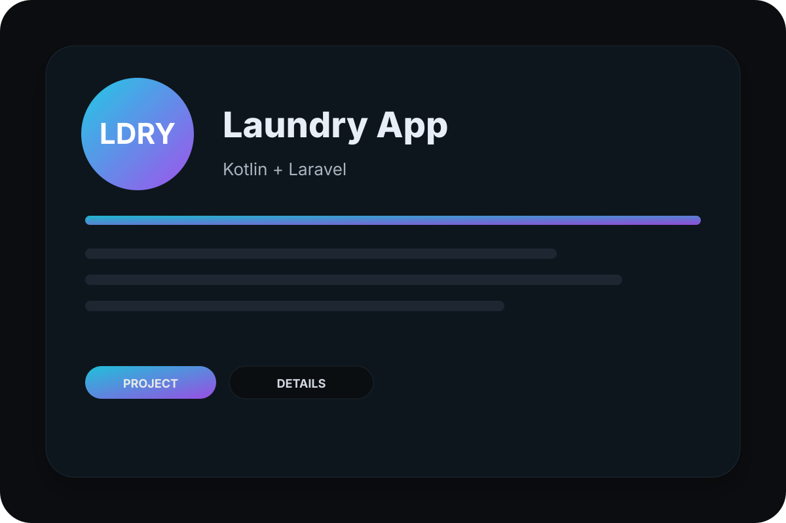

Aplikasi Web
Promosi Wisata (PAM Clustering)
Studi kasus dashboard promosi wisata berbasis Laravel dengan clustering PAM untuk segmentasi pengunjung dan penentuan target promosi yang lebih tepat…
Portofolio
Sembilan proyek nyata di bidang pendidikan, pemerintahan, dan bisnis — mulai dari CMS profil sekolah, sistem akademik, aplikasi kasir, hingga aplikasi Android untuk absensi dan layanan laundry. Setiap halaman menjelaskan masalah yang dihadapi, pendekatan teknis yang dipilih, dan hasil akhirnya.
Aplikasi Web
Studi kasus dashboard promosi wisata berbasis Laravel dengan clustering PAM untuk segmentasi pengunjung dan penentuan target promosi yang lebih tepat…

Aplikasi Web
Studi kasus aplikasi POS/kasir berbasis Laravel dengan clustering K-Means untuk mengelompokkan pelanggan dan produk, lengkap dengan laporan penjualan…

Aplikasi Web
Studi kasus platform manajemen event berbasis Laravel dengan clustering K-Means untuk mengklasifikasikan peserta dan menyusun rekomendasi acara yang…

Aplikasi Web
CMS website profil sekolah berbasis Laravel 10 & Filament: page builder drag-and-drop, media library, menu dinamis, customizer tema, 2FA, dan…

Aplikasi Web
Studi kasus sistem pencarian pengecer LPG terdekat berbasis Laravel dengan algoritma A*, pengecekan stok real-time, dan integrasi rute Google Maps.

Aplikasi Web
Studi kasus sistem peminjaman ruangan berbasis Laravel dengan antrian FIFO untuk mencegah jadwal bentrok, alur persetujuan admin, dan tampilan…

Dashboard & Sistem Informasi
Studi kasus sistem informasi akademik sekolah berbasis Laravel: data siswa dan guru, jadwal pelajaran, nilai, absensi, serta laporan dengan hak akses…

Aplikasi Mobile
Studi kasus aplikasi pemesanan laundry: klien Android native Kotlin, backend API Laravel, pelacakan status cucian, alur pembayaran, dan notifikasi…

Aplikasi Mobile
Studi kasus aplikasi absensi QR code berbasis Kotlin Android dan Laravel dengan validasi geolokasi untuk mencegah titip absen, plus rekap kehadiran…
Sebagian besar proyek di atas berawal dari masalah operasional sederhana. Ceritakan kondisi Anda dan saya bantu rumuskan solusinya.